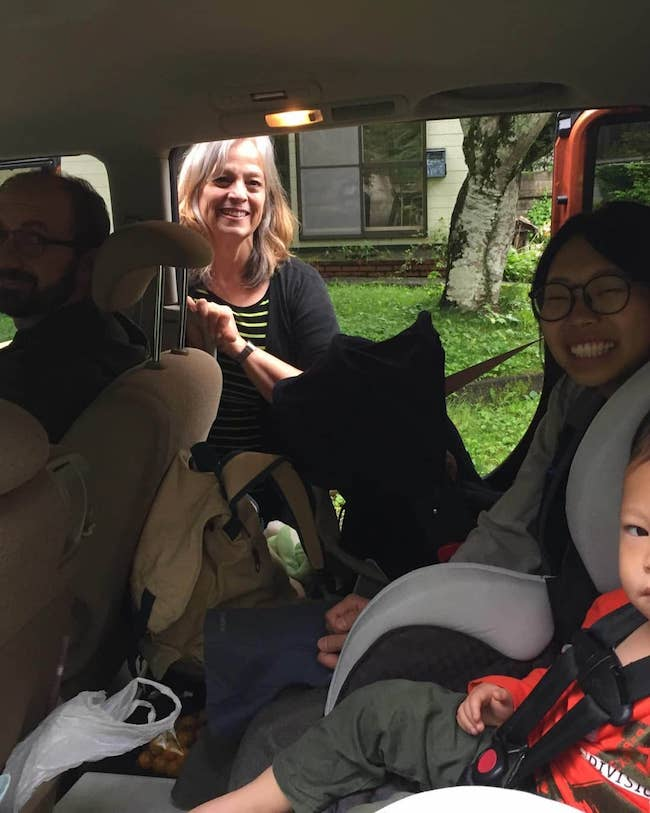
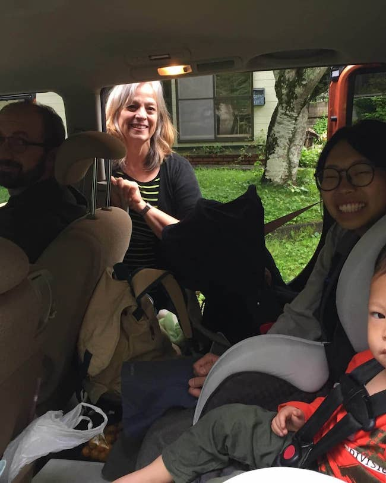
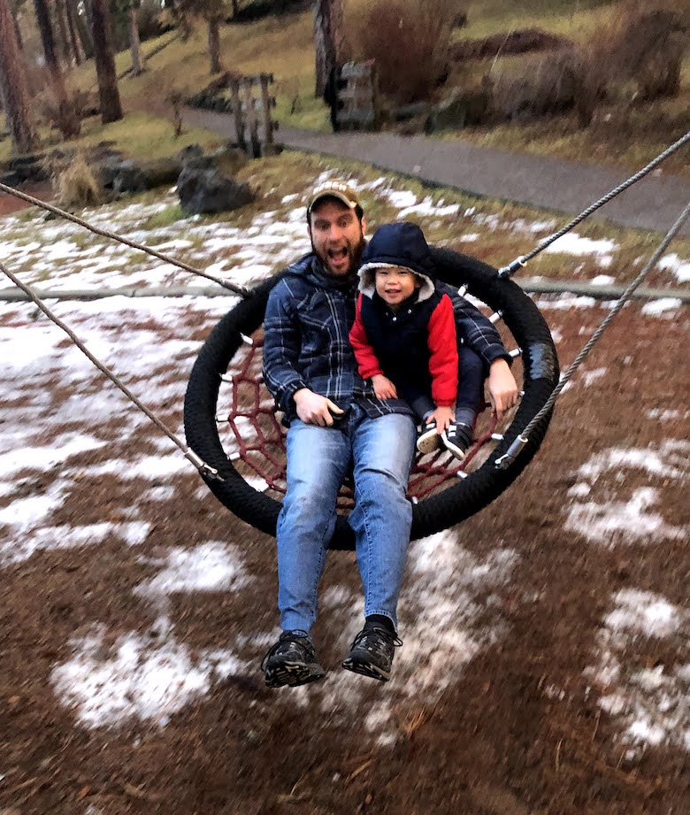

Home for the Holidays
We arrived in the States at the end of July and although we’ve been glad to see family and friends, we had to say goodbye to some old and new friends we were blessed to have in Japan.
 

Summary of our time in the States so far
Los Angeles
We arrived at the end of July in LA, after 30 hours of travel and jetlag, we were in strict quarantine for two weeks-it felt like forever! Rebekah’s family really made it so easy for us though. They cooked food for us, bought food for us, provided lots of toys, lots of treats we hadn’t had in a while, and were just so generous to us.
We also visited our churches (two that we were members of at different times- Arcadia Bible Church and Valley Korean Bible Church) while observing procedures like wearing masks and social distancing. We visited Rebekah’s grandparents a number of times, which was a priority for Rebekah as their health is declining.
During our time in Los Angeles, there were a number of challenges for one of our local churches as two teenage boys passed within the span of a month and a half. It was sobering and sorrowful, but also encouraging to see the Church pray together, support one another, point each other to truth and really just be one.
We were continually refreshed by hearing the Word preached in English and in person– what a privilege.
We were blessed to be able to spend time with the Church, Rebekah’s family as well as Ryan’s aunts and uncles (two of them lived only 10 minutes away!).
Grandpa Quey hugs!
Seattle
Ryan was able to present at his home church, Tabernacle Baptist, in Shoreline, Washington where he attended church his whole childhood until college. We were encouraged by many who have known Ryan since he was born, many who knew and loved Ryan’s mother, and others who were just faithful to pray for us without having even met us.
We got to spend some extra time with Ryan’s dad and older brothers, which was particularly special around the holidays.
God blessed us with the finances to stay at an Airbnb when there weren’t any other lodging options (in part due to COVID) and it served as a nice break to have some space of our own.
Jonathan and one of his new friends, Nicholas, whom we have the joy of living with during our time in Spokane!
Spokane
Some friends from our church in Spokane offered to let us stay with them through Christmas, New Years, and even now as we wait to set departure plan (we have been delayed because of COVID test results). They have a been a joy and encouragement to us as we have visited with church members and fellow missionaries; our friends (& hosts) have definitely used their gift of hospitality to make not only us welcome, but our guests as well!
We have been able to get check ups for Samuel as well as some physical therapy sessions as he figures out how to crawl and use different parts of his body.
Meeting with our church in Spokane has definitely been a breath of fresh air; we have been poured into and built up during our time here.
Ryan has also been able to continue working as we have been traveling, some times more than others, but we are thankful he’s had the opportunity at all!

We’ve also been able to spend some quality time with Ryan’s brother, Jason, who has always been very supportive of the Church and missions worldwide.
God has been with us these past four years of marriage and we were able to celebrate together; it reminded us of our first anniversary we celebrated in Spokane :) God is faithful.
We’ve been preparing spiritually and mentally for returning to Cambodia, as well as talking through changes that we could make as we go back, moving into a smaller house, now with two children and as Ryan will begin to teach at the Bible college in Phnom Penh starting March 2021.
We are currently just waiting on the Lord to give us the green light to head back to Cambodia. We were delayed after being expose to COVID because we continued to test positive, which meant the airline would not let us fly. We had to cancel airline tickets and rebook, and after many tests, we are hoping we will be able to leave this Valentine’s day weekend.
Prayer Requests
- Please be in prayer for our departure– there are many moving parts from Covid tests to baggage and travel agencies etc. We are praying for wisdom as we trust in God’s perfect timing. We know that our time in Spokane, how ever long it will be, has been planned by the Lord for His purposes and we are thankful. Pray for contentment as we long to be back in Cambodia, especially thinking about the Bible school’s classes which are starting in March. Please pray for the flights and layovers which will be challenging with kiddos. We will also be in quarantine when we land in Cambodia for two weeks at a hotel the government will choose, so pray for mercies as we are probably confined to one room.
- Pray for the students at the Bible school, that their hearts would be soft, moldable and ready to learn more about who God is and His Word. Specifically for Ryan’s class on the book of Hebrews– that he will have clarity in what he believes the Lord would have him teach and in what way, to what extent (a difficulty in teaching in another language is the depth and the specificity of words etc. truly being able to communicate in a way the students will understand, but also teaching as accurately as possible). Pray that we would be able to serve the students and be used as tools for whatever God sees fit.
- Pray for the leaders of our church in Cambodia. There are many changes and issues they have faced in the past couple years and with the busyness of life and work, and elders are stretched thin.
- Pray for our transition back into Cambodia. Jonathan probably doesn’t remember any of the details of living in Cambodia aside from people (and at this point only really speaks English), so reintegrating back into heat and mosquitoes, different food and transportation will take a little bit of time. We are still practicing language, but we are praying that we will find the right tutors and learning schedule so we can get back up to speed.
- Pray for the Church worldwide. We have been encouraged by missionaries who have been convicted to leave their homes, families, all sense of comfort and to give even their lives for the cause of the Gospel in foreign lands. This movie about William Carey called Candle in the Dark, though it may be a bit outdated cinematically, was one that we appreciated and helped us see his heart for the nations. As the church in America has been affected by COVID, we know that the church in all the other countries have been impacted as well, whether it’s not being able to meet or struggling financially to feed their families. Pray for leaders and for wisdom that they would know how to tend to their flocks. Pray for all of those who are tried and put through fire, that they would prove to be faithful and overcome, and that others will see, marvel and glorify our God in heaven.